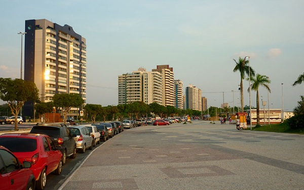

Maratona da Floresta — 42K
15 de Agosto de 2026 · Largada na Orla da Ponta Negra

Orla da Ponta Negra, Manaus — cartão-postal às margens do Rio Negro.
A Prova
A Maratona da Floresta (42K) é a prova rainha do calendário da Associação Atlética Manaus. Com largada e chegada em frente ao Anfiteatro da Orla da Ponta Negra, o percurso combina vias arborizadas, trechos planos de asfalto rápido e a brisa constante das margens do Rio Negro, desafiando maratonistas de todo o país em um cenário amazônico incomparável.
Recomendamos que cada atleta compareça com antecedência para validação do credenciamento, retirada do chip de cronometragem e recebimento da camiseta técnica oficial conforme o tamanho selecionado na inscrição. Ao longo de todos os 42,195 km, a prova conta com postos de hidratação a cada 2,5 km, reposição de isotônicos, suporte de batedores e ambulâncias UTI de prontidão para garantir total segurança aos corredores.
- Distância: 42,195 km (Oficial)
- Concentração / Largada: Anfiteatro da Ponta Negra
- Hidratação: Postos a cada 2,5 km
- Suporte Médico: Equipe e ambulâncias no percurso
Localização da Largada
A concentração e a largada da Maratona serão no Anfiteatro da Praia da Ponta Negra. Confira abaixo a localização exata no mapa.